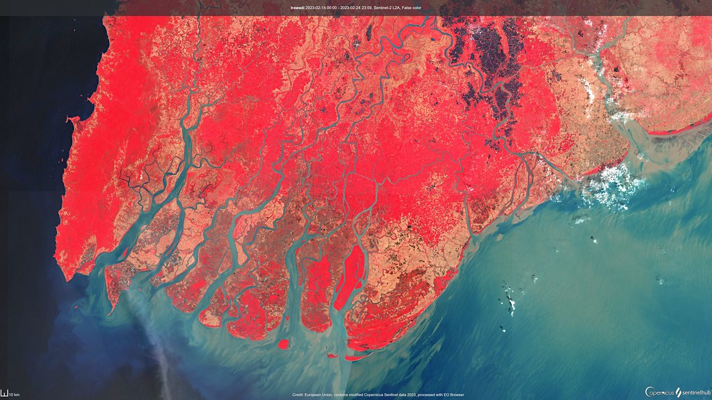

- Tác giả
- Phan Tuấn Anh, Nguyễn Quang Chức
- Mã hội thảo
- GIS24_05
- Nguồn
- Kỷ yếu Hội thảo Ứng dụng GIS toàn quốc 2024
- Năm
- 2024
- Địa danh tại thời điểm nghiên cứu
- Huyện Triệu Phong, tỉnh Quảng Trị
- Địa danh hành chính hiện hành
- [Chờ cập nhật theo đơn vị hành chính hiện hành]
- Từ khóa
- Dinh Chúa Nguyễn
- Quảng Trị
- Viễn thám
- GIS
- Di sản văn hóa
Tóm tắt
[Tóm tắt 100–200 từ – chờ tác giả cung cấp]
